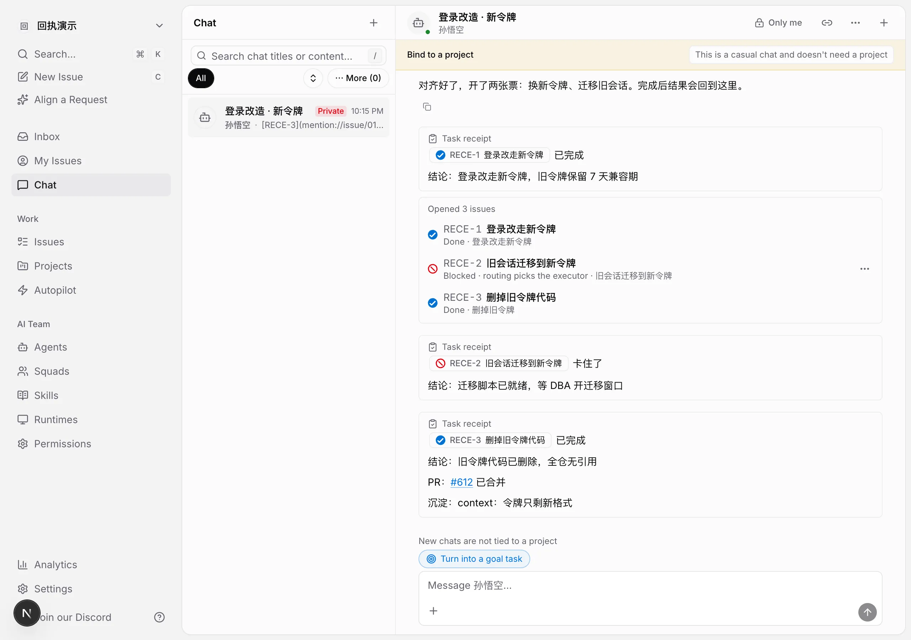
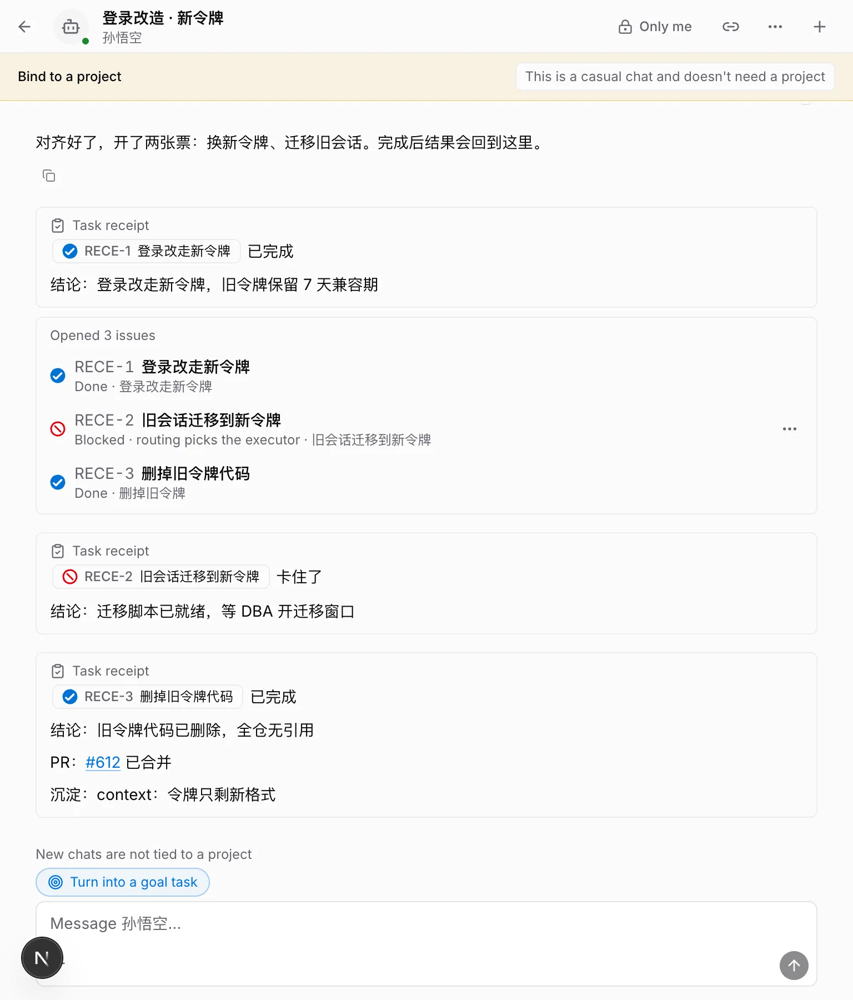
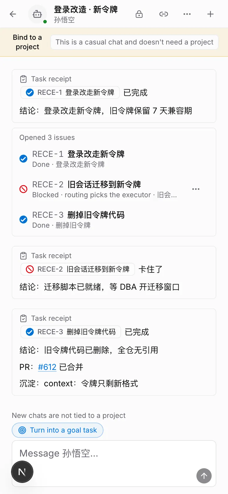
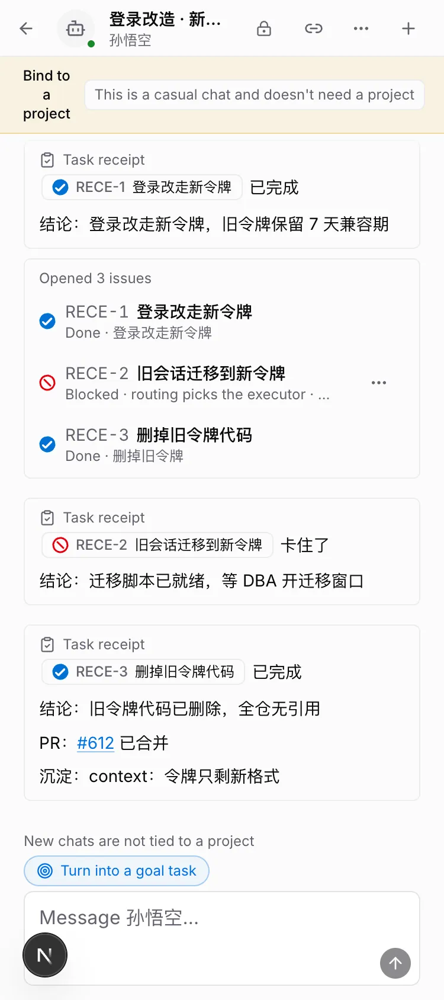
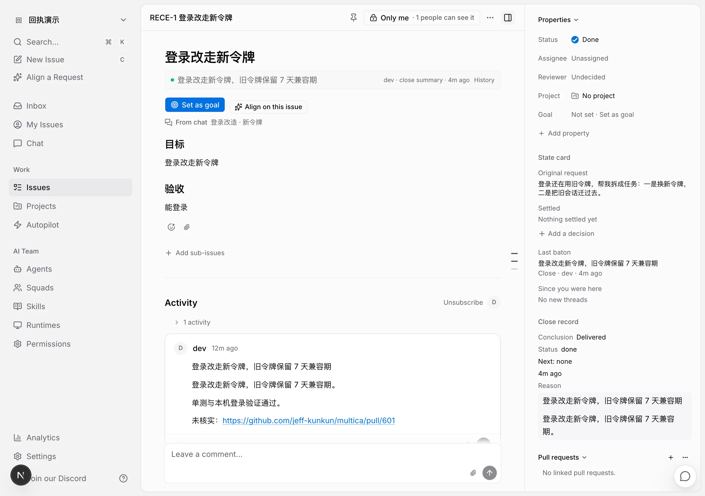
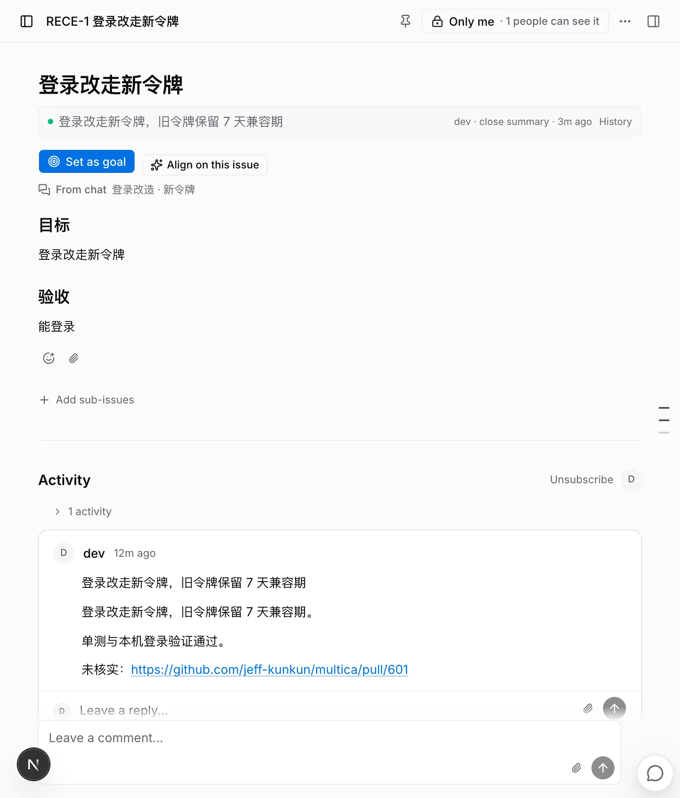
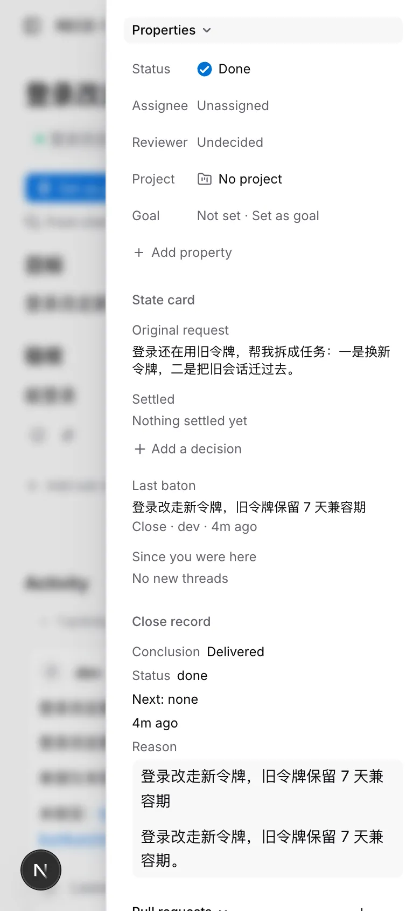
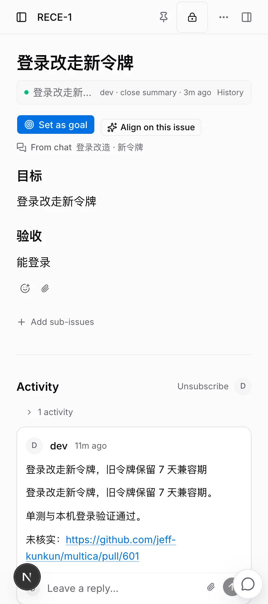

$ multica chat tickets --session <聊天> IDENTIFIER STATUS ASSIGNEE TITLE RESULT RECE-1 done - 登录改走新令牌 登录改走新令牌，旧令牌保留 7 天兼容期 RECE-2 blocked - 旧会话迁移到新令牌 迁移脚本已就绪，等 DBA 开迁移窗口 RECE-3 done - 删掉旧令牌代码 旧令牌代码已删除，全仓无引用 · PR #612 merged $ multica issue context RECE-1 ## 状态卡 RECE-1 目标：登录改走新令牌 来源：聊天「登录改造 · 新令牌」（multica chat history --session <聊天>） 原话：登录还在用旧令牌，帮我拆成任务：一是换新令牌，二是把旧会话迁过去。